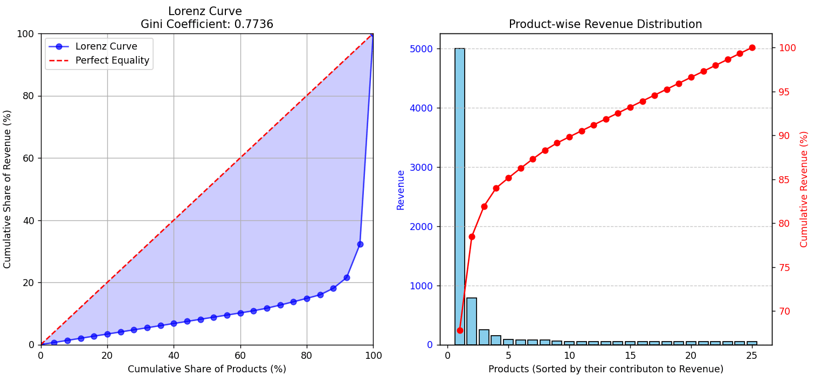

Is Your Product Portfolio a Hidden Risk? Let’s Talk Optimization!
In the world of FMCG & CPG, success often comes from a diverse and well-optimized product portfolio. But here’s the real question: Are you unknowingly over-relying on a few products?
�� How do we measure this? Metrics like the Herfindahl–Hirschman Index (HHI), Concentration Ratio (CR), and Gini Coefficient help uncover hidden revenue concentration risks: ✅ High HHI? Your revenue is controlled by a few dominant products—risky if consumer preferences shift. ✅ High CR (Top 4 products = 80% of revenue)? You’re heavily dependent on a few SKUs. ✅ High Gini Coefficient? Revenue is unequally distributed across products, leaving gaps in your portfolio.
�� Why does this matter? A poorly optimized portfolio can lead to supply chain bottlenecks, missed growth opportunities, and vulnerability to market fluctuations. Companies that diversify and optimize their product mix are more resilient in the long run.
�� What’s the next step? Leverage data-driven insights to rebalance your portfolio, promote underperforming SKUs strategically, and launch new high-potential products. A well-diversified product mix isn’t just about revenue—it’s about long-term stability and scalability.
Gini Coefficient and products revenue distribution
The charts provided represent the Lorenz Curve and a Product-wise Revenue Distribution, which are useful for analyzing Fast-Moving Consumer Goods (FMCG) / Consumer Packaged Goods (CPG) companies in terms of revenue contribution by different products. Left Chart: Lorenz Curve & Gini Coefficient The Lorenz Curve (blue line) shows the cumulative percentage of revenue contributed by the cumulative percentage of products. The red dashed line represents perfect equality, meaning each product contributes equally to the total revenue. The blue shaded area indicates deviation from perfect equality, highlighting the level of concentration of revenue among a few products. The Gini Coefficient quantifies this inequality (values close to 0 indicate more equal distribution, while values closer to 1 indicate high concentration).
Right Chart: Product-wise Revenue Distribution & Cumulative Share The bar chart (light blue) represents the revenue contribution of individual products, sorted from highest to lowest. The red cumulative curve (right axis) tracks the cumulative revenue contribution.
(These visualizations are created based on 25 products with revenue distributions that are randomly skewed. The Gini coefficient is then calculated for the generated revenue distribution.)
Application in FMCG/CPG Industry
-Helps in identifying high-performing products vs. low-performing products.
-A high Gini coefficient suggests a few products drive most of the revenue (80/20 rule – Pareto Principle).
-Companies can focus on key revenue-generating products while optimizing or phasing out low-performing ones.
Application in FMCG/CPG Brand/Product Portfolio Management:
-Helps in SKU rationalization
(deciding which products to keep, improve, or discontinue).
-Pricing & Marketing Strategy: High-revenue products can be the focus of promotions or premium pricing strategies.
Supply Chain & Inventory Management: Identifies the most critical products for stock management.
General Applications of Lorenz Curve Wealth Distribution:
Used in economics to analyze income inequality in societies.
A high Gini coefficient means wealth is concentrated in a few hands.
Brand Evaluation:
Companies can assess brand contribution to total revenue and optimize marketing investments.
Product Portfolio Evaluation:
Helps in portfolio balancing, ensuring a mix of high-performing and emerging products.
Would you like a deeper dive into any specific application or an alternative visualization?
--------
Alternative Visualizations for Product Portfolio Evaluation While the Lorenz Curve is useful, additional visualizations can provide better granularity and actionable insights.
1. Pareto Chart (Bar + Cumulative Line) Similar to the right-side chart in your image but with a cumulative threshold line at 80% revenue contribution.
Helps in quickly identifying the key products driving revenue.
�� Use Case:
SKU rationalization by focusing on the most profitable products.
2. Revenue Contribution Heatmap A matrix-style heatmap showing product revenue contribution over time.
Allows tracking of seasonal trends, new product performance, and declining products.
�� Use Case:
Helps in demand forecasting and inventory management.
3. BCG (Boston Consulting Group) Matrix Divides products into four quadrants based on market growth rate and market share:
Stars (High growth, High market share) – Invest & expand
Cash Cows (Low growth, High market share) – Maintain & optimize
Question Marks (High growth, Low market share) – Decide whether to invest or discontinue
Dogs (Low growth, Low market share) – Consider phasing out
�� Use Case:
Helps in investment decisions for product development.
4. Treemap of Revenue Contribution A hierarchical visualization where each product is represented as a rectangle.
The size of the rectangle correlates with revenue contribution.
�� Use Case:
Provides a quick glance at which products dominate revenue.
5. ABC Analysis (A = High, B = Medium, C = Low Revenue Contributors) Products are categorized into:
A: Top 20% of products generating 80% revenue.
B: Next 30% of products generating 15% revenue.
C: Remaining 50% generating 5% revenue.
�� Use Case:
Prioritization in supply chain and inventory management.
Conclusion: Choosing the Right Visualization Lorenz Curve & Gini Coefficient: Best for measuring overall revenue inequality.
Pareto Chart & ABC Analysis: Best for SKU rationalization.
BCG Matrix: Best for strategic investment in product categories.
Heatmaps & Treemaps: Best for visualizing revenue trends over time.